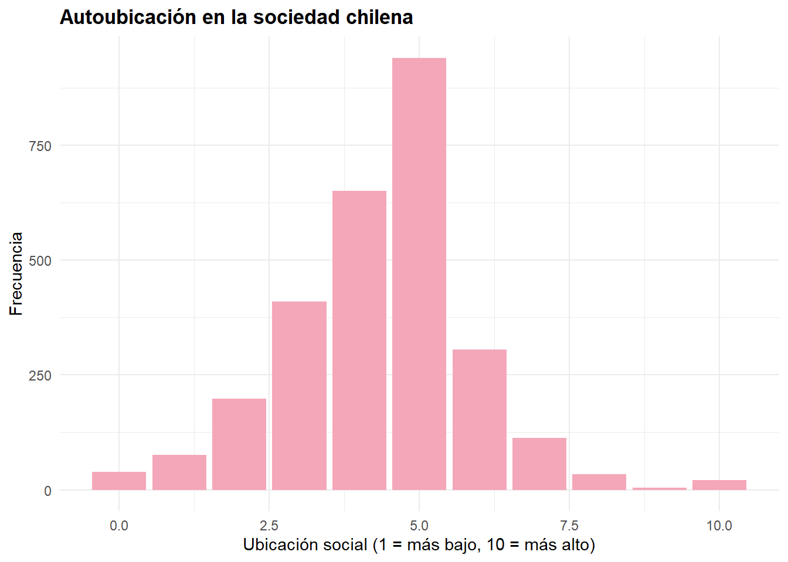
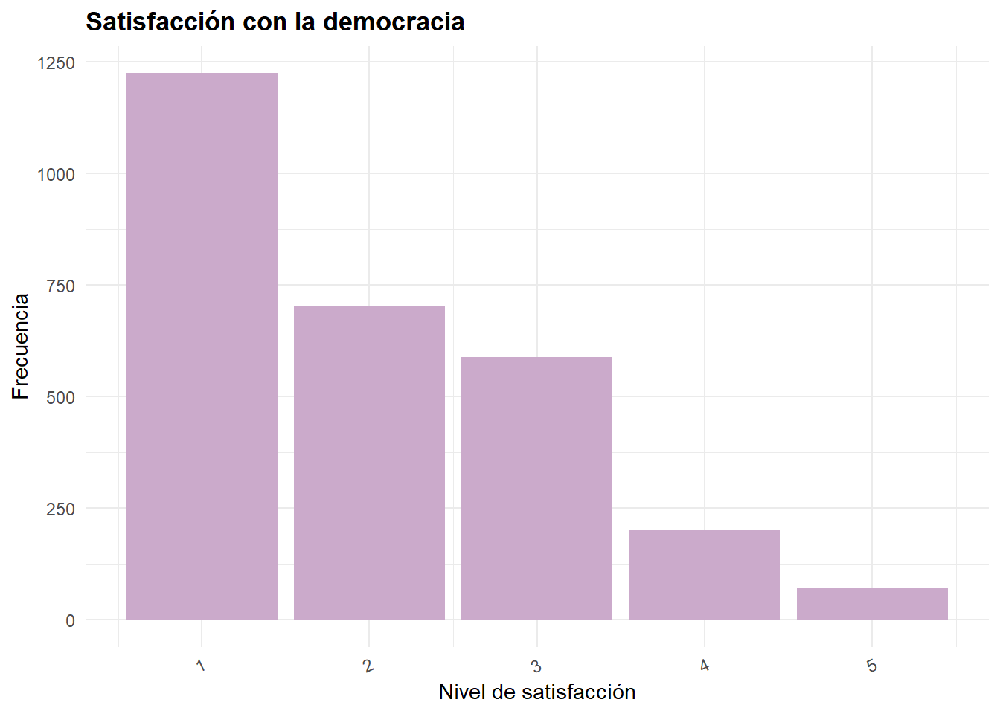

# Carga Librerías --------------------------------------------------------------
library(pacman)
pacman::p_load(tidyverse,
car,
stargazer,
sjlabelled,
sjPlot,
confintr,
gginference,
rempsyc,
broom,
sjmisc,
dplyr,
knitr,
flextable)
options(scipen = 999) # para desactivar notacion cientifica
rm(list = ls()) # para limpiar el entorno de trabajo
# Carga datos ------------------------------------------------------------------
load("input/ELSOC_Long.RData")Análisis Descriptivo de la Autopercepción Social y la Satisfacción Democrática en Chile (ELSOC 2016)
Introducción
En el contexto chileno actual, marcado por transformaciones políticas, desigualdades persistentes y un creciente distanciamiento entre ciudadanía e instituciones, se vuelve relevante comprender cómo las personas se perciben a sí mismas dentro del entramado social. Esta percepción subjetiva de la posición social puede incidir en diversas dimensiones de la vida, incluyendo las actitudes hacia la democracia y su evaluación.
Desde la sociología, resulta clave estudiar estos fenómenos considerando no solo las estructuras objetivas (como ingreso o educación), sino también las representaciones que las personas construyen respecto a su lugar en la sociedad. El presente estudio busca explorar la relación entre la autoubicación social subjetiva y la satisfacción con la democracia en Chile.
Entendemos por autoubicación social la forma en que los/as individuos/as se posicionan en una escala de estatus social percibido, medida del 1 (posición más baja) al 10 (más alta). Por su parte, la satisfacción con la democracia remite a la valoración que la ciudadanía hace del funcionamiento del régimen democrático, considerado un indicador clave de legitimidad política.
La relevancia sociológica de este estudio radica en que diversas investigaciones han mostrado que la percepción subjetiva del estatus social influye en la forma en que las personas se relacionan con instituciones, política y bienestar general (Manstead, 2018; Kraus et al., 2012). En contextos de alta desigualdad como el chileno, esta percepción puede alejarse de indicadores objetivos, pero aún así tener efectos significativos sobre las actitudes cívicas.
Nuestra hipótesis plantea que: a medida que aumenta la autoubicación social subjetiva (es decir, las personas se sienten en una mejor posición), tiende a aumentar la satisfacción con la democracia. Esta relación puede explicarse por una mayor sensación de integración y reconocimiento social entre quienes se perciben en una mejor posición.
La fuente de datos utilizada es la Encuesta Longitudinal Social de Chile (ELSOC), Ola 1 del año 2016. Esta encuesta es representativa a nivel nacional y permite analizar actitudes y percepciones sociales de la población adulta en el país.
Selección de variables y justificación sociológica
1. Autoubicación en la sociedad chilena (autoubi_socie)
Esta variable recoge la percepción subjetiva de estatus social en una escala del 1 al 10. Su inclusión es central, ya que permite captar cómo las personas evalúan su lugar en la estructura social, considerando factores no siempre capturados por indicadores objetivos (como el capital cultural o simbólico). En estudios previos, esta percepción ha mostrado ser predictiva de bienestar, confianza y actitudes políticas (Operario et al., 2004; Kraus et al., 2012).
2. Satisfacción con el funcionamiento de la democracia (satis_demo)
Se trata de una variable ordinal que refleja la evaluación de las personas sobre la democracia chilena. Esta medida es clave para evaluar el vínculo entre ciudadanía e instituciones, especialmente en un país donde los niveles de confianza política han sido históricamente bajos. La sociología política ha demostrado que la percepción de justicia y representación se relaciona estrechamente con el nivel de satisfacción democrática (Norris, 2011).
## Filtrar y seleccionar -------------------------------------------------------
data <- elsoc_long_2016_2022 %>%
filter(ola==1) %>%
select(d01_01,c01)
## Remover NA's ----------------------------------------------------------------
data <- data %>%
set_na(., na = c(-888, -999)) %>%
na.omit()
#Reetiquetado de variables
data <- data %>% rename("satis_demo"=c01, #Satisfacción con el funcionamiento de la democracia.
"autoubi_socie"=d01_01)
data$satis_demo <- set_label(data$satis_demo, label = "Satisfacción con el funcionamiento de la democracia")
data$autoubi_socie <- set_label(data$autoubi_socie, label = "Autoubicación en la sociedad chilena")Visualización de resultados
A continuación, se presenta una tabla descriptiva que resume las principales medidas estadísticas para las variables de interés en este estudio: autoubicación social subjetiva y satisfacción con la democracia.
stargazer(data,type= "text")
==========================================
Statistic N Mean St. Dev. Min Max
------------------------------------------
autoubi_socie 2,790 4.352 1.555 0 10
satis_demo 2,790 1.995 1.084 1 5
------------------------------------------Gráficos
Teniendo nuestra tabla descriptiva como punto de partida, realizaremos a continuación una serie de gráficos que nos permitirán visualizar la distribución de las variables de interés. Estas representaciones gráficas facilitarán la comprensión de los patrones presentes en los datos y apoyarán la interpretación de los resultados obtenidos.
Gráfico 1: Distribución de la autoubicación social subjetiva
A continuación, se muestra un gráfico que representa la distribución de la variable autoubicación social subjetiva. Este gráfico permite observar cómo se concentran las respuestas a lo largo de la escala de 0 a 10, identificando posibles asimetrías, acumulaciones o extremos en la percepción del estatus social.
ggplot(data, aes(x = autoubi_socie)) +
geom_bar(fill = "#F4A7B9") + # rosado pastel
labs(
title = "Autoubicación en la sociedad chilena",
x = "Ubicación social (1 = más bajo, 10 = más alto)",
y = "Frecuencia"
) +
theme_minimal(base_family = "sans") +
theme(plot.title = element_text(face = "bold"))
Grafico 2
El siguiente gráfico muestra la distribución de la variable satisfacción con la democracia. Dado que esta se mide en una escala de 1 a 5, el gráfico facilita identificar tendencias generales en la valoración que hace la ciudadanía del funcionamiento democrático en Chile.
ggplot(data, aes(x = satis_demo)) +
geom_bar(fill = "#CBAACB") + # lila pastel
labs(
title = "Satisfacción con la democracia",
x = "Nivel de satisfacción",
y = "Frecuencia"
) +
theme_minimal(base_family = "sans") +
theme(axis.text.x = element_text(angle = 25, hjust = 1),
plot.title = element_text(face = "bold"))
Interpretación de resultados
Los resultados descriptivos muestran que la autoubicación social subjetiva presenta un promedio de 4.35 en una escala de 0 a 10, con una desviación estándar de 1.56. Esto sugiere que, en promedio, las personas se perciben en una posición intermedia-baja dentro de la escala social, con cierta dispersión en las respuestas. El mínimo reportado fue 0 y el máximo 10, lo que indica que se utilizaron todos los niveles posibles de la escala.
Por otro lado, la satisfacción con la democracia tiene un promedio de 1.99 en una escala de 1 a 5, con una desviación estándar de 1.08. Este resultado indica un nivel de satisfacción relativamente bajo entre las personas encuestadas, con una dispersión moderada. Aunque el valor máximo observado fue 5, el promedio cercano a 2 sugiere una tendencia general hacia la insatisfacción con el funcionamiento de la democracia en Chile al momento de la medición.
En conjunto, los datos muestran que tanto la percepción del estatus social como la satisfacción con la democracia tienden a ubicarse en niveles bajos, lo que podría estar reflejando tensiones sociales importantes y una desconexión entre ciudadanía e instituciones. Estos resultados dan pie a profundizar en el análisis de la relación entre ambas variables.